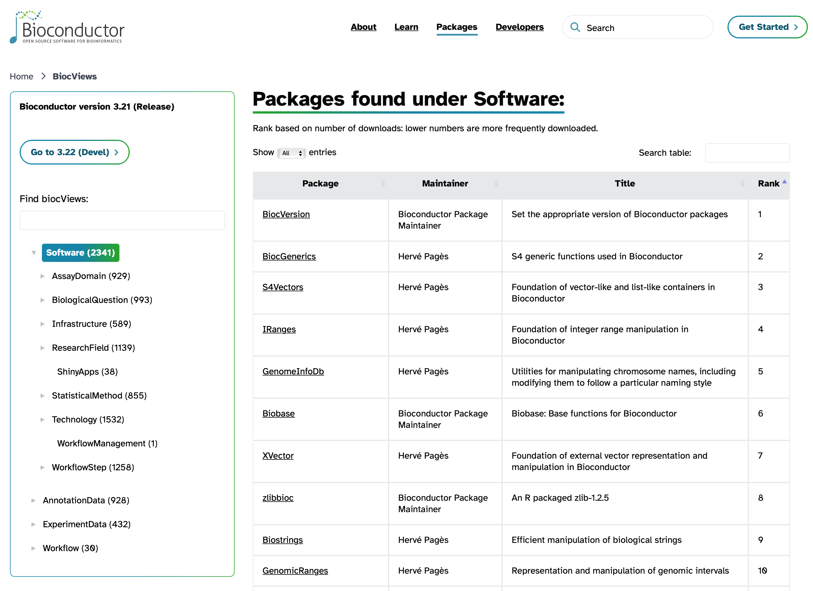

Using Packages / Libraries
Objectives
- Understand what an R package is.
- Learn about the different package repositories, and their specialities.
- Learn how to install packages from the different repositories.
What is a package?
A package is the collection of functions (and sometimes data) stored as files in a particular structure. A library is the directory location where the code and data are stored. Typically the words are used interchangeably.
| A package is a collection of functions |
|---|

|
In day one, we introduced several tools
(i.e. functions) to manipulate tables
(select, filter, mutate etc.). A
package is like a toolbox that gathers related tools
together.
|
R comes with a number of packages already installed, but it’s in the ability to use additional packages that makes R especially useful. There are three main places to look for R packages. These include:
- CRAN (the Comprehensive R Archive Network), for general purpose packages. Packages in this repository are subject to documentation and testing requirements that give confidence that the code works as advertised.
- Bioconductor, for Bioinformatics packages. Packages in this repository are subject to even more stringent documentation and testing requirements. They are meant to facilitate “rigorous and reproducible analysis of data from current and emerging biological assays.”
- Individual repositories on GitHub, often for development versions of packages already on (or soon to be on) CRAN or Bioconductor. Packages here are subject to caveat emptor, that is, “let the buyer beware.”
To summarize:
| Repository | Purpose | Documentation | Testing |
|---|---|---|---|
| CRAN | General purpose packages | Required | Required |
| Bioconductor | Bioinformatics packages | Required | Required |
| GitHub | General purpose packages | Not required | Not required |
Is tidyverse a package?
The tidyverse is actually a collection of packages that
are designed to work together. The tidyverse is then a
meta-package, with constituent packages like dplyr,
ggplot2, tidyr, and others. When you install
the tidyverse package, it will automatically install all of
the constituent packages for you.
Installing packages
Historically, the package install method was peculiar to the housing
repository. Now, the BiocManager package from Bioconductor
makes it possible to install packages from essentially any source.
One installer to rule them all
The BiocManager::install() function can install CRAN,
Bioconductor, and GitHub packages. Here’s an example with a mix of all
three:
# DO NOT RUN
# tidyverse is on CRAN, DESeq2 is on Bioconductor, and methylSig is on GitHub
BiocManager::install(c('tidyverse', 'DESeq2', 'sartorlab/methylSig'))Expand for repository-specific installers
From CRAN
To install a package from CRAN, you can run something like:
# Do not run, this is already installed for us
install.packages('tidyverse')From Bioconductor
To install a package from Bioconductor, you first need the
BiocManager package. Then you can give the name of the
package to the installer, as in:
# Do not run
install.packages('BiocManager')
# The :: notation before the install() tells R to use the function from BiocManager
BiocManager::install('DESeq2')From GitHub
To install packages from GitHub one can use the
remotes::install_github() function. For example:
# Do not run
# To install the package at https://github.com/sartorlab/methylSig/
# The format is <repository_owner>/<repository_name>
remotes::install_github('sartorlab/methylSig')Search for Bioconductor packages
While this workshop series focuses on differential expression analysis of RNA-seq data, there are many different types of data and analyses that bioinformaticians may want to work with. Sometimes you may get a new dataset and not know exactly where to start with analyzing or visualizing it. The Bioconductor package search view can be a great way to browse through the packages that are available.
There are several thousand packages available through the Bioconductor website. It can be a bit of a challenge to find what you want, but one helpful resource is the package search page (pictured below).

Using packages
Once you have installed a package, that doesn’t mean you have access
to all its functions in the R session. You have to use the
library() command to load a package, like with:
library(DESeq2)Note that when installing a package we quoted the package name, but when we load the library after installation we don’t.
Resources
Objectives
- Understand what an R package is.
- Learn about the different package repositories, and their specialities.
- Learn how to install packages from the different repositories.
| Previous lesson | Top of this lesson | Next lesson |
|---|